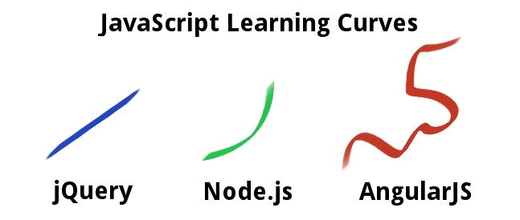

Apéro techno - 21 novembre 2014
node.js + AngularJS
au journal Le Monde
À propos
- Ex. développeur "corporate" C / C++
- Migration volontaire vers le "bleeding edge"
- Arrivée chez Omnilog en février 2014
(notes)
Bleeding edge ?
- 1ères versions en 2009
- Font encore le buzz (même si ça se calme)
Bleeding edge ?

- Qu'est-ce qui est si bien ?
- Qu'est-ce qui n'est pas si bien ?
- Est-ce pour moi ?
Plan
- Contexte
- node.js
- AngularJS
- Pratiques au Monde
- Opinions et conclusions
+ questions à volonté !
+ apéro !
Qui sont les pionniers en France ?
Contexte
Nouveau système éditorial. Fusion des éditions :
- print = journal papier
- numérique = site web, mobiles, tablettes...
DÉFIS
- appli critique (BAT quotidien)
- charge
- utilisateurs difficiles
Démo
(notes)
Technos utilisées


Javascript revolution
- le langage le plus incompris du monde
- accidentellement génial (comme l'ensemble du web ;)
- déjà partout, énorme pool de développeurs
(notes)
Javascript revolution
- un langage de script comme un autre python, ruby
- langage interprété = productivité++ typage fort pas si utile
- héritage prototypal = productivité++ vent de fraicheur sur l'objet
- JSON = productivité++ au revoir XML lourd
- closures intégrées = magie insoupçonnée
(notes)
Javascript revolution
- même âge que ruby ! (1995)
- ce sont les tests qui font la qualité du code
- le tout objet est lourd et inefficace
- ruby et python ont le DP réacteur, mais en lib, et la std API a des I/O bloquantes
- pendant ce temps, java discute encore de comment implémenter les closures
Le nouveau venu
- interpréteur javascript tout neuf by google (2008)
- open source, performant

…une lib "from scratch" au meilleur du moment :
- design pattern réacteur intégré merci les closures
- I/O non bloquantes merci les closures
- modèle évènementiel
- micro-framework souplesse, liberté
- gestionnaire de paquet (npm, 2011)
= 
(notes)
Liens pour débuter
micro-framework :
ligne de commande :
- cible le web dynamique, connecté
- performance++ pour les serveurs
- mono-thread = productivité++
- APIs REST, micro-services
- projets, code et développeurs full stack (en théorie)
(notes)
recos grands noms du web
TODO…
- …
(notes)
microservices

- http://fr.slideshare.net/xgorse/klubup-forumphp-join
- http://martinfowler.com/articles/microservices.html
contre-points
- pas pour le calcul intensif ou tâches longues
- callback hell (promises ?)
- API parfois brouillonne (évènement ? exception ?)
- API non terminée, version stable encore à venir, ex. mode cluster
- qq problèmes de stabilité ?
- pb de gouvernance en cours
(notes)
Liens
Pendant ce temps, le front-end...


- de plus en plus complexe
- passe lui aussi au dynamique, connecté
"un nouveau framework par jour"
Introducing...
pour appli cliente propre et organisée
inclusions dans le HTML
Résultat :

- framework déclaratif (comme le HTML et c'est bien)
- permet de modulariser son appli
- solide, made by google, grosse communauté
- prévu testable dès la conception (et c'est bien !)
- pas parfait, mais îlot de stabilité dans le monde fou du front-end !
Testable ?
- testable en test unitaire
- rapide
- accès au DOM (phantomJS)
- testable en e2e (selenium + protractor)
Testable ?
DÉMO

- gros framework
- beaucoup de concepts à intégrer
(notes)

- Attention au SEO
- Attention aux perfs
- DI complexe, bootstrap
- gros concurrent qui monte : react (facebook)
- environnement front encore instable (ES6, polymer, web components…)
- AngularJS 2.0 proche
node + Angular = magie ?
La techno aide, mais la fiabilité est dans les bonnes pratiques.
Bonnes pratiques
- Gestion de projet
- Code linting (jshint)
- Code review (Github entreprise)
- Tests unitaires
- Tests e2e
- Intégration continue (Jenkins)
- Déploiement roulant
- Supervision
Gestion de projet
- dès la conception
- API first
- personnas
Code linting
Code review
Tests unitaires
Tests e2e
Intégration continue
Déploiement roulant
Supervision
Conclusions
- technos récentes : rencontré bugs, veille nécessaire, devs d'élite
- front-end encore en recherche, évolutions majeures à venir
- promesse de code reuse moyennement tenues
- micro-libs magiques mais versions à maintenir
- micro-libs = créativité mais bonnes pratiques peinent à émerger
- microservices : la prod ne suit pas
- agile, dette = compétence et discipline nécessaire
THE END
Questions + apéro !!
Titre
…
- …
- …